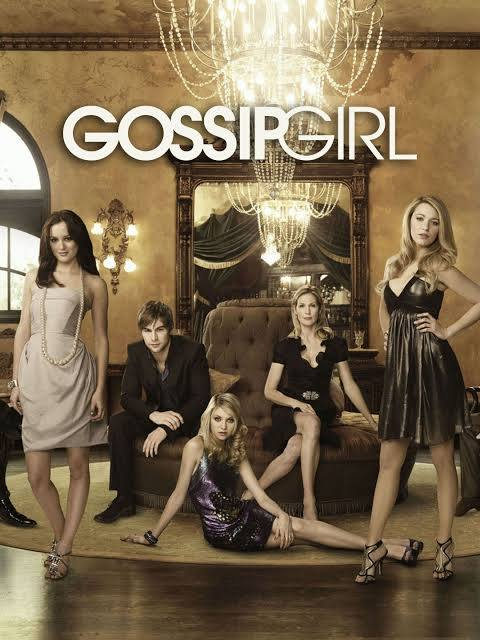
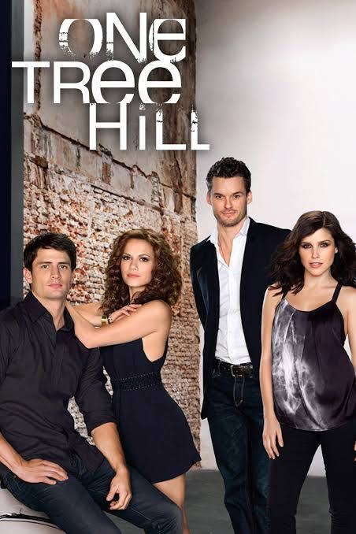
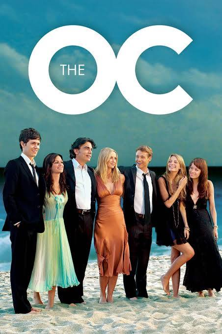
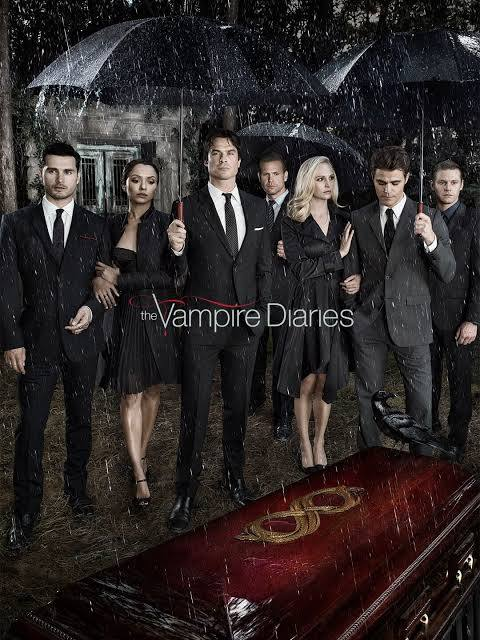
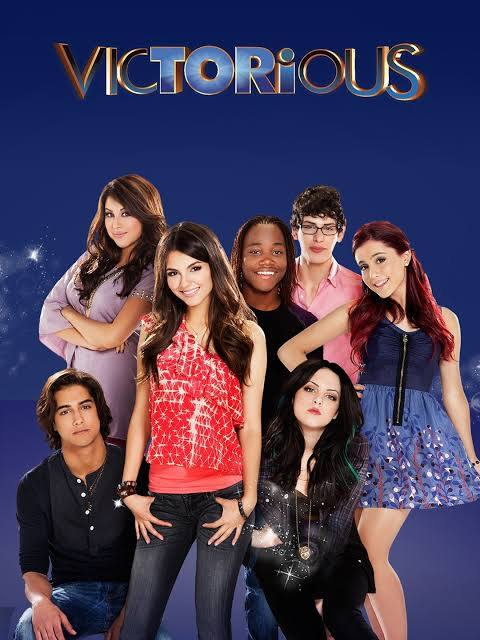
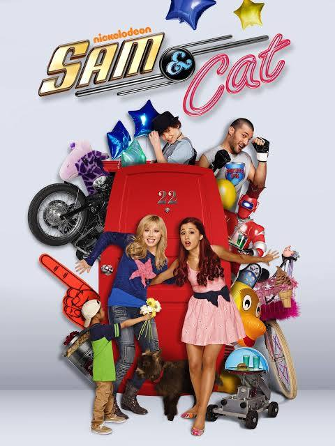
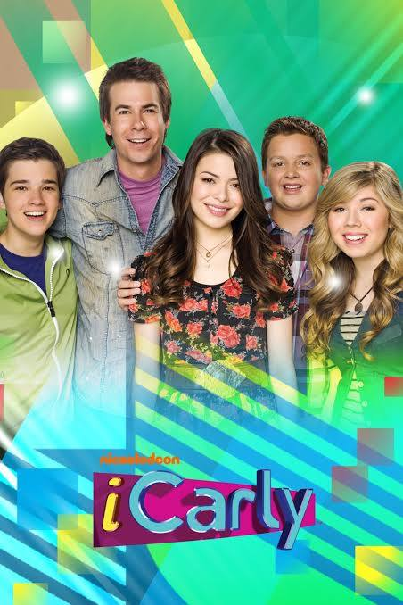

Welcome to my website! My website will include a section about myself and also a section about diffrent TV shows that I would recommend based on your intrests and vibe!
Name: Fara
🏀⚽️Sports: basketball, soccer, tennis🎾
👯♀️How I spend my free time: Hanging out with friends and family, watching TV📺
🍝Fav food: Pasta🍝
📚In school activiteys: Sports, tour guide, clubs.📚
🕍Out of school activiteys: Teacher assistent at my temple, teen tour particapent✈️
Have you ever wanted to start watching TV but didn't know where to start or what to watch? That used to be me. After I started to watch more and more TV, I would make a list of shows that I want to watch, and also shows that I have watched and my rating of that show. Therefore, this list will give you the best shows based on what you like. and why without having do ressearch on your own!

Gossip girl is a classic 2000s series. It includes 6 seasons with 121 episodes in total. It is a drama series about the crazy lives of wealthy teenagers who attend a private school on the Upper East Side. The main focus of this show is the complex friendships (espically with 2 best friends Serena Van der woodsen and Blair Waldorff), intense romance, and the backstabbing schemes. In this show, everyones lives are written down by a blogger who is anonymous. There are six main charatcers. Gossip girl is also known for it's fashion, drama, and the characters struggeles.

One Tree Hill is another drama 2000s series. It is set in a fictional town called Tree Hill in North Carolina. It focuses on the complex relationship between two brothers: Nathan Scott and Lucas Scott. At first they had been forced to be together because of their high school basketball team. One Tree Hill revolves around romance, rivalry, and friendships within a core friend group. One Tree Hill is also known for it's soundtrack that makes people emotional and a storyline that is dramatic. There are 9 seasons with a total of 187 episodes.

The OC is a 2000s series that has 4 seasons with a total of 92 episodes. It is an American teen drama series following the main character Ryan Altwood who was a troubled boy from an unsteady home and is adopted into a wealthey family. This family that Ryan is adopted into lives in the wealthey parts of Newport Beach, Orange County. The OC focuses on the Cohen family as they welcome Ryan into their home. It is a mix of humor but also follows the close bond between Ryan, and his now new brother, Seth. The two boys deal with fitting in, romance, highschool, and growing up together.

The Vampire Diaries is a 2000s series that includes 8 seasons with a total of 171 episodes. It is a supernatrual drama that is set in the mysterious town of Mystic Falls, Virginia. It focuses on the main character Elena Gilbert who is a highschool student. Her life is turned around when she falls for a vampire that is centuries-old named Stefhan Salvatore. Elena also gets caught up with his dangerous brother Damon. This series is known for its intense love triangle. The Vampire Diaries also explores a world full of witches, werewolves, and family histories that are complex. This show is the perfect balance between teen romance and action as the characters fight to protect their town from ancient supernatrual threats.

Victorious is a teen sitcom that has 4 seasons with a total of 57 episodes.

Show 6

Show 7